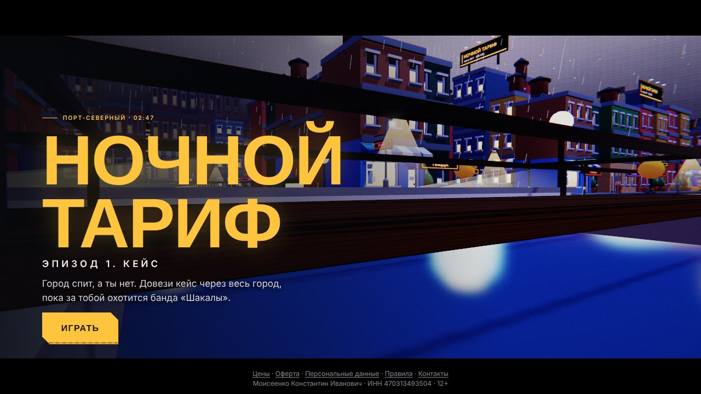
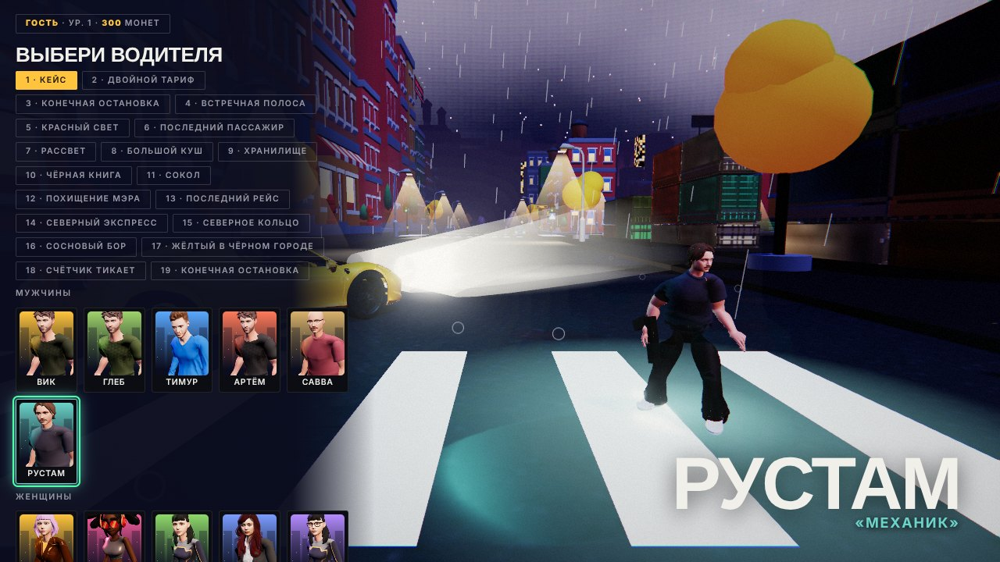
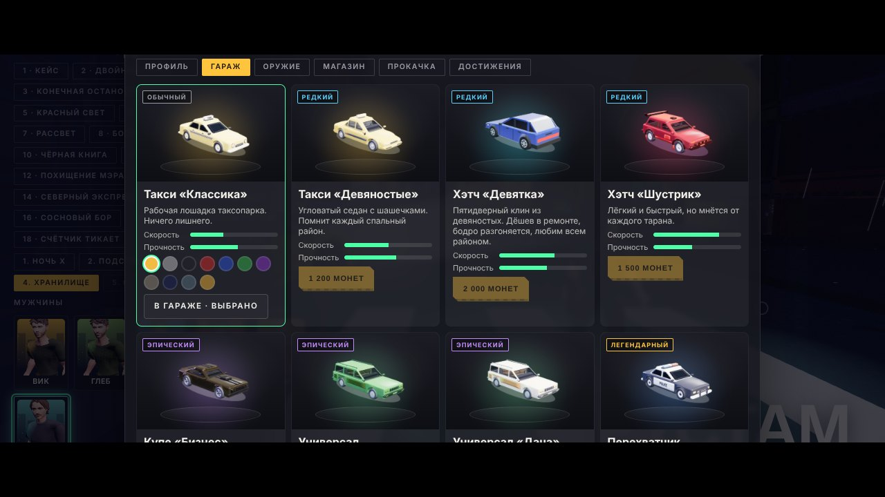
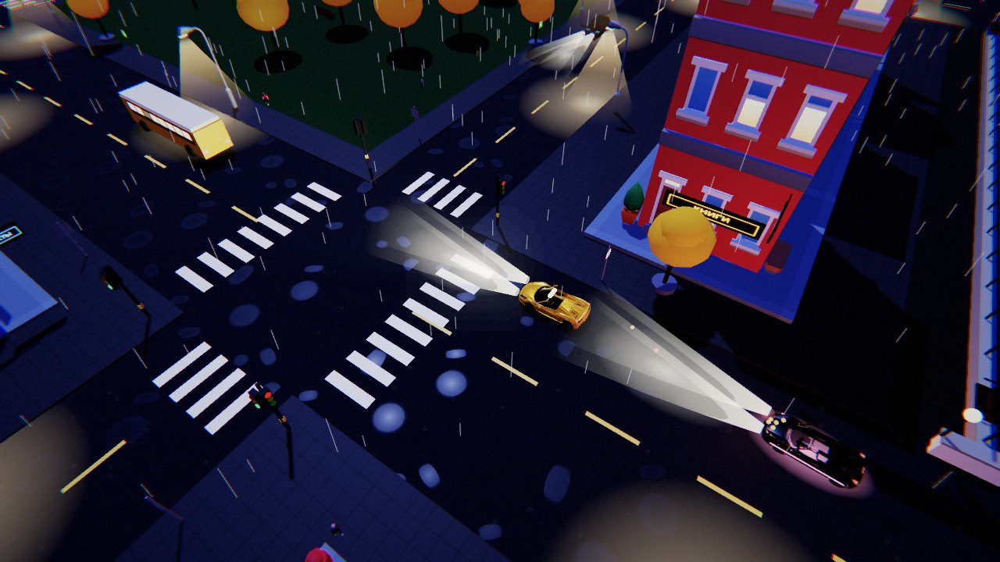
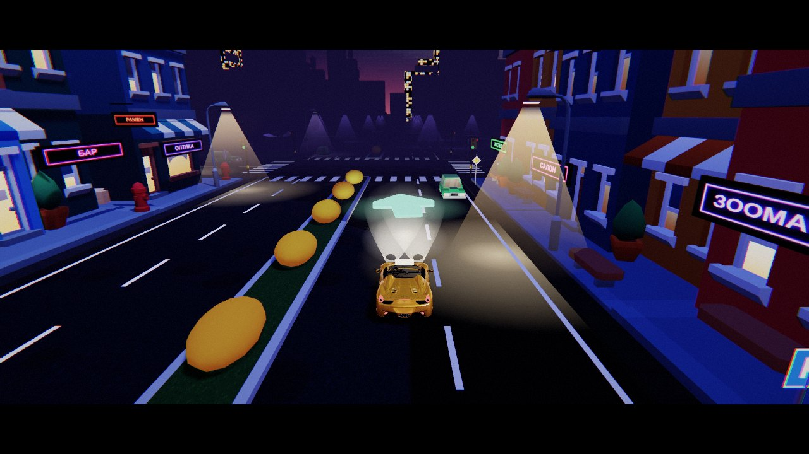
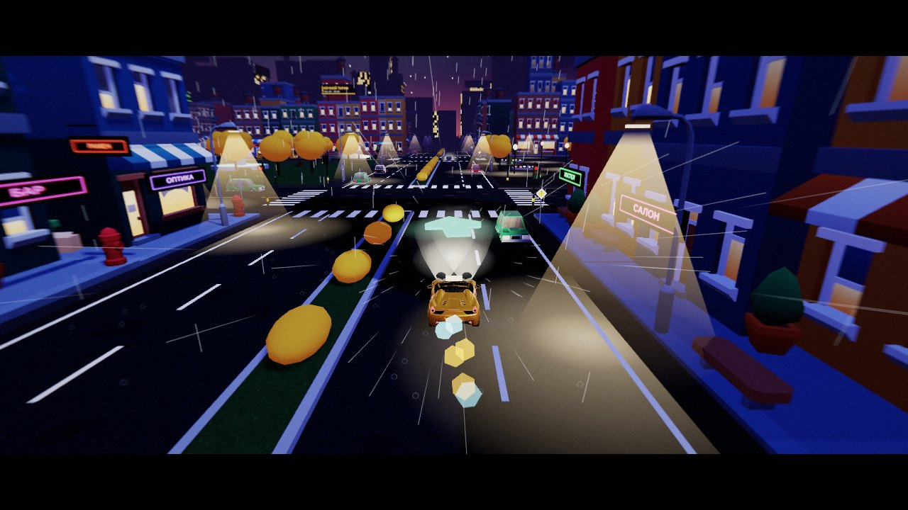
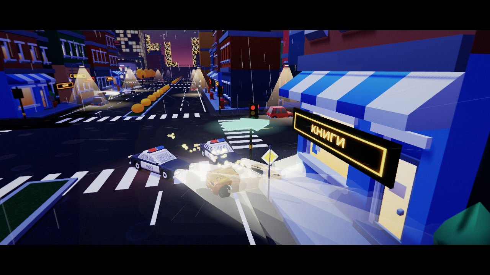
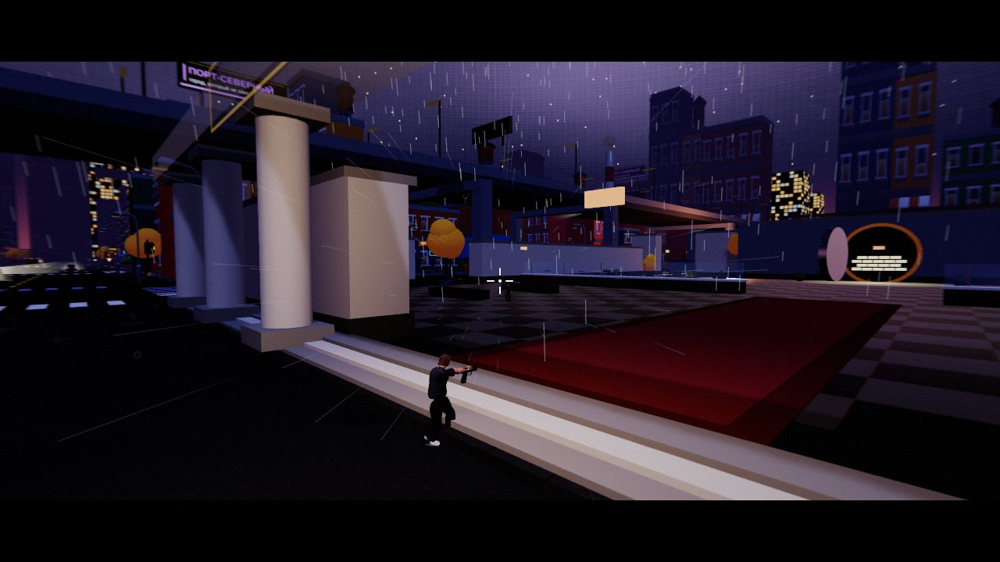
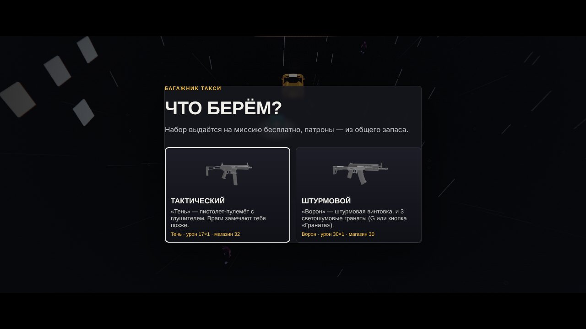
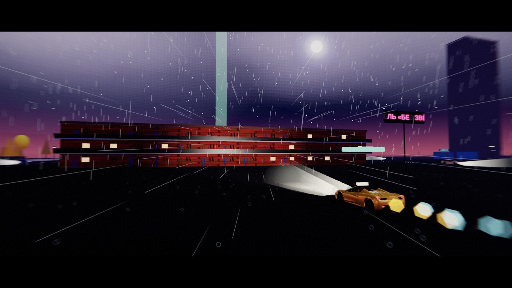

Об игре «Ночной тариф»
Бесплатная 3D-игра в браузере. Ночной город Порт-Северный, жёлтое такси, погони, перестрелки и пассажиры, которые никогда не бывают просто пассажирами. Играть можно на телефоне и компьютере, без установки и без регистрации.
Играть бесплатноЧто это за игра
Ты — ночной таксист. Возишь заказы, уходишь от погони, выходишь из машины и отбиваешься пешком, когда дорога заканчивается. Сюжет разбит на эпизоды и миссии по несколько минут: можно пройти одну за перерыв или весь сезон за вечер.
- За рулём: погони, слежка за машинами, перехват конвоев, гонки на пригородной трассе, парковка и дрифт-шоу.
- Пешком: перестрелки с укрытиями, штурм зданий по этажам, бои с боссами, спасение заложников, тихое проникновение мимо прожекторов.
- Город: центр с небоскрёбами, порт, вокзал, аэропорт, коттеджный посёлок, трасса и район «Нижний город». Ездят машины, ходят люди, работают светофоры, меняются погода и время года.
- Гараж и арсенал: машины, раскраски и неон, улучшения и 15 видов оружия. Всё покупается за игровые монеты, которые зарабатываются в игре.
- Онлайн «Открытый город»: общий город с другими игроками, чат, группы с друзьями и задания.
Водители
Перед игрой выбираешь водителя: Вик «Таксист», Глеб «Бугай», Тимур «Фара», Артём «Прицел», Савва «Дед», Рустам «Механик», Кира «Ночь», Майя «Искра», Зоя «Снайпер», Ольга «Сталь» и Ника «Хакер». У каждого своя история и своя сильная сторона: кто-то крепче в драке, кто-то быстрее за рулём или точнее стреляет.
Сюжет: 16 эпизодов основной истории
- Эпизод 1. Кейс · 1 миссий
Город спит, а ты нет. Довези кейс через весь город, пока за тобой охотится банда «Шакалы». - Эпизод 2. Двойной тариф · 6 миссий
Хвост, накладные, странный пассажир, засада в парке и фургон, который нельзя упустить. - Эпизод 3. Конечная остановка · 6 миссий
Вера подставила героя: камеры на складе №7 засняли его такси. Теперь «Ночные», люди Веры, ищут его по всему городу, а у Веры — тетрадь Лёвы с маршрутами. - Эпизод 4. Встречная полоса · 6 миссий
Вера позвала в город гастролёров — банду Барона с бирюзовыми фарами. Они перекрывают маршруты и ищут свидетельницу Соню, которая видела, кто им заплатил. - Эпизод 5. Красный свет · 6 миссий
За голову героя назначена награда, и платёж прошёл через счёт его же таксопарка. Хозяин парка, Пётр Семёныч, когда-то учил героя водить. Теперь он в доле с Верой. - Эпизод 6. Последний пассажир · 6 миссий
Вера наносит ответный удар: похищает Лёву и Соню, отключает свет в городе и берёт Марка. Герой собирает своих людей по одному. - Эпизод 7. Рассвет · 6 миссий
Финал сезона. Последняя ночь Веры: её армия, её последний заказ и встреча на рассвете у старого парома. - Эпизод 8. Большой куш · 6 миссий
Прошёл месяц. Банк «Гранит» забрал таксопарк Марка за долги, а его хозяин Аркадий Гранин скупает город. Вера звонит из тюрьмы: в хранилище «Гранита», в ячейке 117, лежат деньги Диспетчера и чёрная книга — кому Гранин платил. Команда готовится к большому делу. - Эпизод 9. Хранилище · 6 миссий
Ночь Х. Команда в сборе, коды расшифрованы. Нужно обесточить квартал, вскрыть хранилище «Гранита» и уйти с деньгами. Гранин ждёт гостей, но не знает, откуда они зайдут. - Эпизод 10. Чёрная книга · 6 миссий
Последний раунд с Гранином. Соня оказывается его дочерью, чёрная книга разорвана, а настоящие деньги на рассвете уходят в порт. - Эпизод 11. Сокол · 6 миссий
Завтра суд над Граниным. Его компаньон, полковник Жаров из ЧВК «Сокол», поднимает в воздух вертолёт, чтобы до утра не осталось ни одного свидетеля. Ночь, прожектор с неба и жёлтое такси внизу. - Эпизод 12. Похищение мэра · 6 миссий
Мэр Андрей Ветров возвращает таксопарк водителям. Прямо на церемонии его похищают люди в масках, а камеры показывают у мэрии жёлтое такси. Теперь героя ищет вся полиция города, а мэра надо найти раньше, чем станет поздно. - Эпизод 13. Последний рейс · 12 миссий
Вера сбежала при перевозке в суд. Через час из аэропорта «Северный» вылетает частный борт ЧБ 007, а в её сумке — ключи от счетов, на которых держится весь ночной город. Полиция застряла на мосту, и до вылета успевает только жёлтое такси. - Эпизод 14. Северный экспресс · 12 миссий
Вера и её сервер уезжают в столицу «Северным экспрессом»: в последнем вагоне полиция везёт задержанную и улики. Банда «Стрелочники» с вокзала обещала, что поезд до столицы не доедет. До отправления час, и капитан Орлова просит жёлтое такси прикрыть вокзал. - Эпизод 15. Северное кольцо · 16 миссий
Банк дал таксопарку Петра Семёныча неделю: либо долг, либо молоток. Спасти парк может только Ночной кубок таксистов на пригородной трассе «Северное кольцо» — призовые как раз на долг. Но трассу хочет закрыть девелопер Глянцев, и его команда «Глянец» не привыкла проигрывать. - Эпизод 16. Сосновый Бор · 15 миссий
Глянцев под следствием, а его коттеджный посёлок «Сосновый Бор» за южным шоссе живёт своей жизнью. По ночам там пропадают машины жильцов, частная охрана «Периметр» разводит руками, а полиция без доказательств за шлагбаум не заходит. Председатель посёлка зовёт таксиста.
Новый сезон «Охота по тарифу»
Три эпизода, 36 миссий, новый герой и новый район города. Таксист Вик, бывший армейский сапёр, берёт последний заказ дождливой ночи, и за его жёлтое такси назначают награду. Перед каждой миссией Вик выбирает в багажнике набор: тихий или штурмовой. Пули пробивают тонкие стены, здания приходится брать этаж за этажом, а в машине играет ночное радио «Полночь». В финале сезона — выбор, от которого зависит концовка.
- Эпизод 17. Жёлтый в чёрном городе · 12 миссий
Последний заказ дождливой ночи: напуганная девушка, два чёрных внедорожника и миллион за жёлтое такси. Вик не собирался воевать. Синдикат решил за него. - Эпизод 18. Счётчик тикает · 12 миссий
Копия записи спрятана в мотеле «Без звёзд», и синдикат уже там. «Око» видит каждую улицу. Вик решает ударить первым. - Эпизод 19. Конечная остановка · 12 миссий
Сухогруз, шоссе под ливнем, небоскрёб «Монолит» и крыша, на которой Князь предложит сделку. Конечная.
Города мира: Париж, Лондон, Нью-Йорк
Три эпизода по 10 миссий. Таксист из Порт-Северного едет по обмену в три города. В каждом своя карта, своя история и миссии, которых нет больше нигде в игре.
- Эпизод 20. Париж: украденный рассвет · 10 миссий
Из музея украли картину, а реставратор Амели садится именно в твоё такси. Попутчики на фестивале, мопеды «Ласточек», катер на Сене, галерея подделок, ворота под колокол, крыши и железная башня на рассвете. - Эпизод 21. Лондон: туманный счёт · 10 миссий
Букмекер Мистер Ноль забрал лицензию у старого кэбмена Гарри. Левостороннее движение, туман без навигатора, ночной двухэтажный автобус, клиенты строго по бою часов, гонка с метро, карманник на платформе, живой лабиринт, разводной мост и таран броневика. - Эпизод 22. Нью-Йорк: жёлтая лихорадка · 10 миссий
«Король Медальонов» Виктор Кейн скупает лицензии такси. Смена со счётчиком и тающими чаевыми, пробки, о которых не знает навигатор, буксир на тросе, гололёд, пакет с поезда на эстакаде, парад, трюки на съёмке, последний паром, балки на кранах и хранилище с лазерами.
Скриншоты










Управление
На компьютере
- За рулём: W A S D — газ и руль, Shift — занос, Пробел — огонь, N — нитро, B — щит.
- Пешком: W A S D — бег, мышь — обзор и прицел, клик — огонь, E — удар, V — камера, Esc — пауза.
На телефоне
Слева — стик: вверх газ или бег, в стороны руль. Справа — кнопки «Огонь», «Занос», «Нитро», «Щит» и «Профиль». В горизонтальном положении удобнее всего.
Частые вопросы
Это бесплатно?
Да. Игра бесплатна, покупок за деньги нет. Всё в игровом магазине покупается за монеты, заработанные в игре. Подробнее — на странице «Цены».
Нужна ли регистрация?
Нет, играть можно сразу. Прогресс сохраняется на устройстве. Если войти через Telegram, ВКонтакте или MAX, монеты, машины и пройденные миссии будут доступны на любом устройстве.
Где ещё можно играть?
На этом сайте, а также как мини-приложение в Telegram, ВКонтакте и MAX. Профиль общий для всех площадок.
Для какого возраста?
12+.
Играть бесплатно